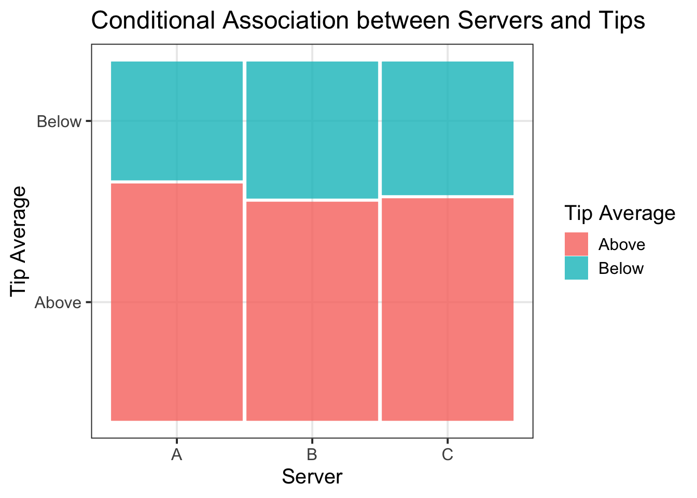
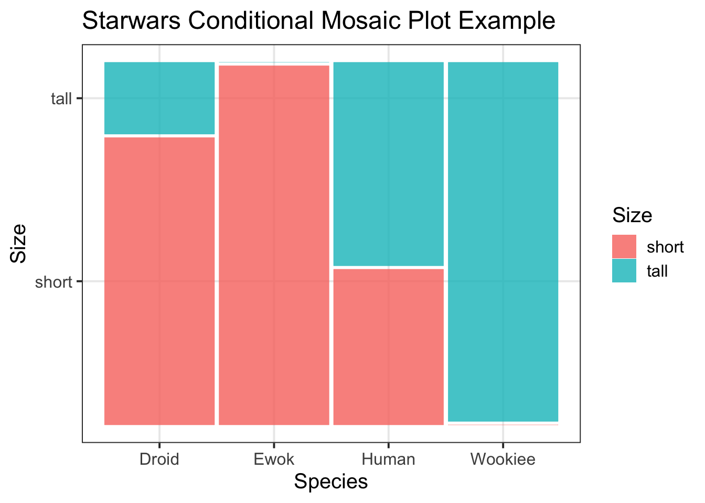

| Variable Name | Description |
|---|---|
| Bill | Size of the bill (in dollars) |
| Tip | Size of the tip (in dollars) |
| Credit | Paid with a credit card? n or y |
| Guests | Number of people in the group |
| Day | Day of the week: m=Monday, t=Tuesday, w=Wednesday, th=Thursday, or f=Friday |
| Server | Code for specific waiter/waitress: A, B, or C |
| PctTip | Tip as a percentage of the bill |
Probability Rules
Semester 1 - Week 8
1 Formative Report B
Instructions and data were released in week 7.
1.1 This week’s task
Task B2
B2) Investigate if a movie receiving a good rating is independent of the genre.
Sub-steps
Below there are sub-steps you need to consider to complete this week’s task.
Tip
To see the hints, hover your cursor on the superscript numbers.
Reporting probabilities
In the report write-up do not include the intermediate working that was necessary to compute the probabilities required, it’s sufficient to define the probability and give the final result. The intermediate working should be part of the code, which appears in Appendix B.
Following APA style, do not use a zero before the decimal point when reporting probabilities.
For example, report as \(P(A \cap B) = .25\) instead of showing the full working in your textual reporting, i.e. \(P(A \cap B) = 0.5 * 0.5 = 0.25\).
- Reopen last week’s Rmd file, as you will continue working on last week’s data about the top 3 most frequent movie genres, and their ratings.1
- What’s the probability of a movie being rated as Good, i.e. \(P(Good)\)?2
- Given that a viewer watched a Drama movie, what’s the probability of them giving a good rating, i.e. \(P(Good \mid Drama)\)?3
Given that a viewer watched an Action movie, what’s the probability of them giving a good rating, i.e. \(P(Good \mid Action)\)?
Given that a viewer watched a Comedy movie, what’s the probability of them giving a good rating, i.e. \(P(Good \mid Comedy)\)?
Do you think that a movie receiving a Good rating is independent of the Genre?4
- Now let’s move on from independence. Given that a viewer gave a bad rating, what’s the probability of them having watched a non-drama movie? 5
Advanced material
Note the following rules of set theory:
- \((A_1 \cup A_2) \cap B = (A_1 \cap B) \cup (A_2 \cap B)\)
- \((A_1 \cap A_2) \cup B = (A_1 \cup B) \cap (A_2 \cup B)\)
Consider three mutually exclusive events \(A_1, A_2, A_3\) and another event \(B\). We have that:
\[ \begin{aligned} P\big(A_3^c \mid B\big) &= \frac{P(A_3^c \cap B)}{P(B)} \\ &= \frac{P\big((A_1 \cup A_2) \cap B\big)}{P(B)} \\ &= \frac{P\big((A_1 \cap B) \cup (A_2 \cap B)\big)}{P(B)} \qquad \text{[rule (1) above]}\\ &= \frac{P(A_1 \cap B) + P(A_2 \cap B)}{P(B)} \end{aligned} \]
Suppose \(A_1 = Action\), \(A_2 = Comedy\), \(A_3 = Drama\), and \(B = Bad\).
\[ \begin{aligned} P\big(Drama^c \mid Bad\big) &= \frac{P\big(Drama^c \cap Bad\big)}{P(Bad)} \\ &= \frac{P\big((Action \cup Comedy) \cap Bad\big)}{P(Bad)} \\ &= \frac{P\big((Action \cap Bad) \cup (Comedy \cap Bad)\big)}{P(Bad)} \\ &= \frac{P(Action \cap Bad) + P(Comedy \cap Bad)}{P(Bad)} \end{aligned} \]
- Based on your analysis above, which movie Genre do you think lead studios should invest in for their next movie?6
- Using a conditional mosaic plot, display the conditional distribution of movie genres being rated as either good or bad, making sure to add a main title and clear axis titles.7
- In the analysis section of your report, write up a summary of your findings from above, using proper rounding to 2 decimal places and avoiding any reference to R code or functions. In particular, focus on whether events were independent, and which genre of movie lead studios should consider investing in based on audience ratings.8
2 Worked example
Consider the dataset available at https://uoepsy.github.io/data/RestaurantTips.csv, containing 157 observations on the following 7 variables:
These data were collected by the owner of a bistro in the US, who was interested in understanding the tipping patterns of their customers. The data are adapted from Lock et al. (2020).
# A tibble: 6 × 7
Bill Tip Credit Guests Day Server PctTip
<dbl> <dbl> <chr> <dbl> <chr> <chr> <dbl>
1 23.7 10 n 2 f A 42.2
2 36.1 7 n 3 f B 19.4
3 32.0 5.01 y 2 f A 15.7
4 17.4 3.61 y 2 f B 20.8
5 15.4 3 n 2 f B 19.5
6 18.6 2.5 n 2 f A 13.4Working with the “Tip_Avg” variable created last week, we can see our relative frequency table for all of our servers (A, B, and C) who were tipped either Above or Below the standard tipping rate in the US (i.e., 15%).
tips2 <- tips |>
mutate(Tip_Avg = ifelse(PctTip <= 15, 'Below', 'Above'))
rel_freq_tbl <- table(tips2$Server, tips2$Tip_Avg) |>
prop.table() |>
addmargins()
rel_freq_tbl
Above Below Sum
A 0.25477707 0.12738854 0.38216561
B 0.25477707 0.15923567 0.41401274
C 0.12738854 0.07643312 0.20382166
Sum 0.63694268 0.36305732 1.00000000- What’s the probability of a customer tipping above average?
Either sum the three individual probabilities from the table above, i.e.
\[ P(Above) = P(Server~A \cap Above) + P(Server~B \cap Above) + P(Server~C \cap Above) \]
# P(Above) =
# P(Server A AND Above) + P(Server B AND Above) + P(Server C AND Above)
0.25477707 + 0.25477707 + 0.12738854[1] 0.6369427Or obtain it from the row of sums. Alternatively, use indexing to extract the value from the table:
# indexing: table[row number, col number]
rel_freq_tbl[4, 1][1] 0.6369427# or indexing: table[row name, col name]
rel_freq_tbl['Sum', 'Above'][1] 0.6369427We can write this up as: The probability of a customer tipping above average was \(P(Above) = .64\)
- Given that the server was A, what’s the probability of a customer tipping above average?
# P(Above | Server A)
0.25477707 / 0.38216561[1] 0.6666667We can write this up as: Given that the server was A, the probability of a customer tipping above average was \(P(Above \mid Server~A) = .67\)
- Given that the server was B, what’s the probability of a customer tipping above average?
# P(Above | Server B)
0.25477707 / 0.41401274[1] 0.6153846We can write this up as: Given that the server was B, the probability of a customer tipping above average was \(P(Above \mid Server~B) = .62\)
- Given that the server was C, what’s the probability of a customer tipping above average?
# P(Above | Server C)
0.12738854 / 0.20382166[1] 0.625We can write this up as: Given that the server was C, the probability of a customer tipping above average was \(P(Above \mid Server~C) = .63\)
- Is tipping above average independent of the server?
No, the events seem to be dependent, but very weakly. The conditional probabilities of tipping above average for each server are different from the marginal one, \(P(Above)\), even though to a small extent. In particular, the probability of tipping above average after service from Server A is higher than the others.
- Given that a customer tipped below average, what’s the probability of them being not being served by server A?
# P(Server A^c | Below) =
# P( (Server B OR Server C) | Below ) =
# ( P( Server B AND Below ) + P( Server C AND Below ) ) / P(Below) =
(0.15923567 + 0.07643312) / 0.36305732[1] 0.6491228Given that a customer tipped below average, the probability of the customer not being served by server A was \(P((Server \ A)^c \mid Below) = .65\)
- Based on your analysis above, which server do you think offers the best customer service based on their tips?
Server A appears to offer the best service to their customers, based solely on their personal tips - they had a much higher probability of receiving an above average tip (.67) than a below average tip (.33). Furthermore, the probability that a customer was served by either B or C, given that they tipped below average, was .65. This indicates that server A had the minority of the customers tipping below average.
- To visualise our findings, we could use a conditional mosaic plot:
library(ggmosaic)
mos_cond_plot <- ggplot(tips2) +
geom_mosaic(aes(x = product(Tip_Avg), fill = Tip_Avg, conds = product(Server))) +
labs(title = "Conditional Association between Servers and Tips",
x = "Server",
y = "Tip Average",
fill = "Tip Average")
mos_cond_plot

Example writeup
It was more likely for customers to tip above (64%) than below (36%) average. Though it was likely that all servers would receive an above average tip, tipping did not appear to be independent of server, based on conditional probabilities. Based on their personal tips, Server A appeared to offer the best service, where they were more likely to receive an above average tip (67%). Servers B and C were almost equally likely to receive above average tips (62% and 63% respectively). These associations are visually represented in Figure 2. Furthermore, among all customers that tipped below average, the majority was served by B or C (65%).
Advanced material: Three definitions of independence
Recall the frequency table
rel_freq_tbl
Above Below Sum
A 0.25477707 0.12738854 0.38216561
B 0.25477707 0.15923567 0.41401274
C 0.12738854 0.07643312 0.20382166
Sum 0.63694268 0.36305732 1.00000000The following three definitions of independence are equivalent. Two events \(A\) and \(B\) are independent if one of these holds:
- \(P(A | B) = P(A)\)
- or \(P(B | A) = P(B)\)
- or \(P(A \cap B) = P(A) P(B)\)
For now, let’s focus on the third definition. To see if tipping above average is independent of the specific server, we can checks that condition separately for each server:
A. Is \(P(Server A \cap Above)\) equal to \(P(Server A) P(Above)\)?
# 0.25477707 is P(Server A ∩ Above)
0.38216561 * 0.63694268 # P(Server A) * P(Above)[1] 0.2434176B. Is \(P(Server B \cap Above)\) equal to \(P(Server B) P(Above)\)?
# 0.25477707 is P(Server B ∩ Above)
0.41401274 * 0.63694268 # P(Server B) * P(Above)[1] 0.2637024C. Is \(P(Server C \cap Above)\) equal to \(P(Server C) P(Above)\)?
# 0.12738854 is P(Server C ∩ Above)
0.20382166 * 0.63694268 # P(Server C) * P(Above)[1] 0.1298227For server A and B, the values are close enough but not exactly equal. However, for server C, the values are identical up to the 2nd decimal place. This suggests the events are dependent, but to a small extent.
3 Student Glossary
To conclude the lab, add the new functions to the glossary of R functions.
| Function | Use and package |
|---|---|
conds |
In conditional mosaic plots, this specifies the variables whose values we condition the probabilities on. (ggmosaic) |
References
Lock, Robin H, Patti Frazer Lock, Kari Lock Morgan, Eric F Lock, and Dennis F Lock. 2020. Statistics: Unlocking the Power of Data. John Wiley & Sons.
Footnotes
Hint: access the Rmd file from the Group Discussion Space.
If last week’s driver hasn’t uploaded it yet, please ask them to share it with the group via the Group Discussion Space, email, or Teams.
To download the file from the server, go to the RStudio Files pane, tick the box next to the Rmd file, and select More > Export.↩︎-
Hint: For the starwars example data, if we were to ask what is the probability of a species being short, i.e. P(short), we would look at the relative frequencies table:
swars_rel_freq_sumshort tall Sum Droid 0.10526316 0.02631579 0.13157895 Ewok 0.02631579 0.00000000 0.02631579 Human 0.34210526 0.44736842 0.78947368 Wookiee 0.00000000 0.05263158 0.05263158 Sum 0.47368421 0.52631579 1.00000000And calculate the following:
# P(short) = P(Droid AND short) + P(Ewok AND short) # + P(Human AND short) + P(Wookiee AND short) 0.10526316 + 0.02631579 + 0.34210526 + 0.00000000[1] 0.4736842Alternatively, we would use look in the “Sum” value under the “short” column of our table.
↩︎We can write this up as: the probability of a Starwars character being short was .47.
-
Hint: For the starwars example data, if we were to ask what is the probability of being short for the Human species, i.e. P(short | human), we would use the relative frequencies table
swars_rel_freq_sumshort tall Sum Droid 0.10526316 0.02631579 0.13157895 Ewok 0.02631579 0.00000000 0.02631579 Human 0.34210526 0.44736842 0.78947368 Wookiee 0.00000000 0.05263158 0.05263158 Sum 0.47368421 0.52631579 1.00000000And we would calculate the following:
# P(short | human) = P(short AND human) / P(human) = 0.34210526 / 0.78947368[1] 0.4333333
↩︎We can write this up as: given that a viewer watched a drama movie, the probability that they rated it as good was .43.
-
Hint: Recall that we say that two events \(A\) and \(B\) are independent if knowing that one occurred doesn’t change the probability of the other occurring, i.e. \(P(A | B) = P(A)\).
In the starwars example, we would say that being short seemed to be dependent on the species, given that the conditional probabilities are different from P(short). For example, the probability of being short for Ewoks and Droids is much higher than P(short):
↩︎# P(short) = .47 # P(short | droid) = .80 # P(short | ewok) = 1 # P(short | human) = .43 # P(short | wookiee) = 0 -
Hint: For the Starwars example data, if we were to ask what is the probability of a character being not a human given they are short, we would use the relative frequencies table
swars_rel_freq_sumshort tall Sum Droid 0.10526316 0.02631579 0.13157895 Ewok 0.02631579 0.00000000 0.02631579 Human 0.34210526 0.44736842 0.78947368 Wookiee 0.00000000 0.05263158 0.05263158 Sum 0.47368421 0.52631579 1.00000000And then calculate the following:
# P(human^c | short) = # P(human^c AND short) / P(short) # ( P(droid AND short) + P(ewok AND short) + P(wookiee AND short) ) / P(short) (0.10526316 + 0.02631579 + 0.00000000) / 0.47368421[1] 0.2777778
↩︎We can write this up as: Given that a Starwars character is short, the probability that they are a non-human is .28.
Hint: Here it would be useful to think about which movie genre offers the best audience experience - lead studios will likely want to invest in making movies in Genres that people enjoy watching!↩︎
-
Hint: Make sure to load the
ggmosaicpackage so that you can specifygeom_mosaic()when building your plot. To add a title, as well as x- and y-axis titles, specifylabs(title = , x = , y = ). This week we will also need to specify theconds()argument.Example: For the
starwarsdataset, I create a mosaic plot using the following code, and specify conds() within my aes() argument:↩︎library(ggmosaic) m_plot <- ggplot(starwars2) + geom_mosaic(aes(x = product(size), fill = size, conds = product(species))) + labs(title = "Starwars Conditional Mosaic Plot Example", x = "Species", y = "Size", fill = "Size") m_plotFigure 1: Starwars Mosaic Plot Example Title -
Hint: You may want to consider using proper notation in your write-up (as you have seen in lectures). To do so, you can use
$ equation $. For example, if I wanted to specify union, in the text section of the Rmd file (i.e., not a code chunk) I could write$P(A \cup B)$. This would render in my main file as:\(P(A \cup B)\)
To get the \(\cup\) symbol, write
$P(A \cup B)$.To get the \(\cap\) symbol, write
$P(A \cap B)$.↩︎